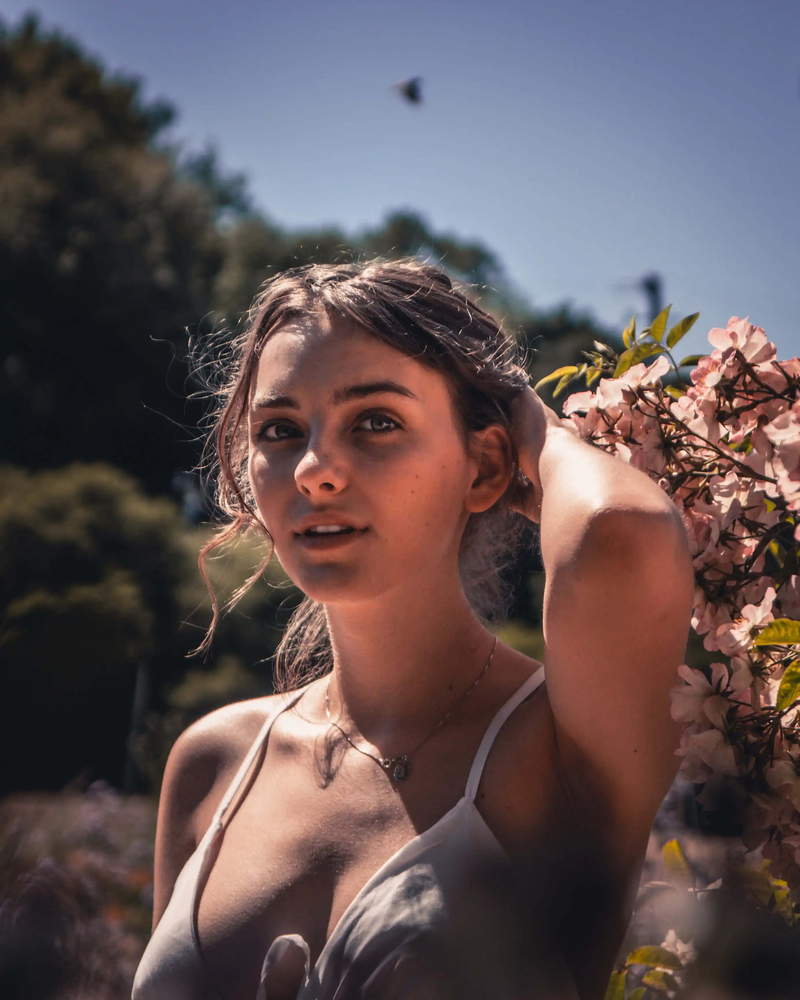
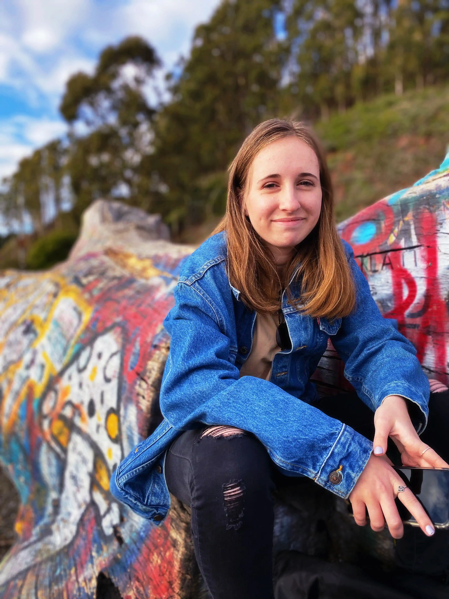
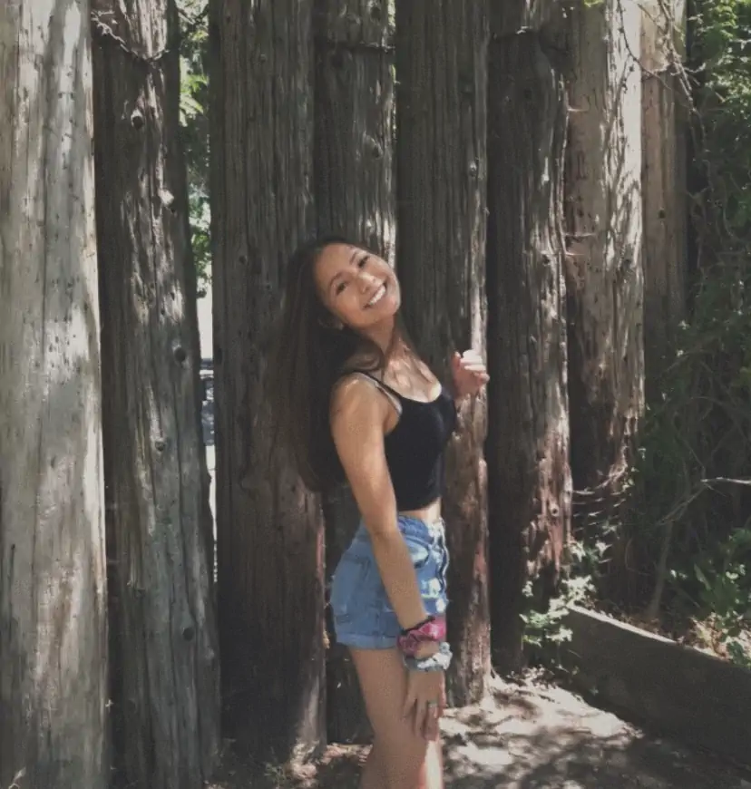
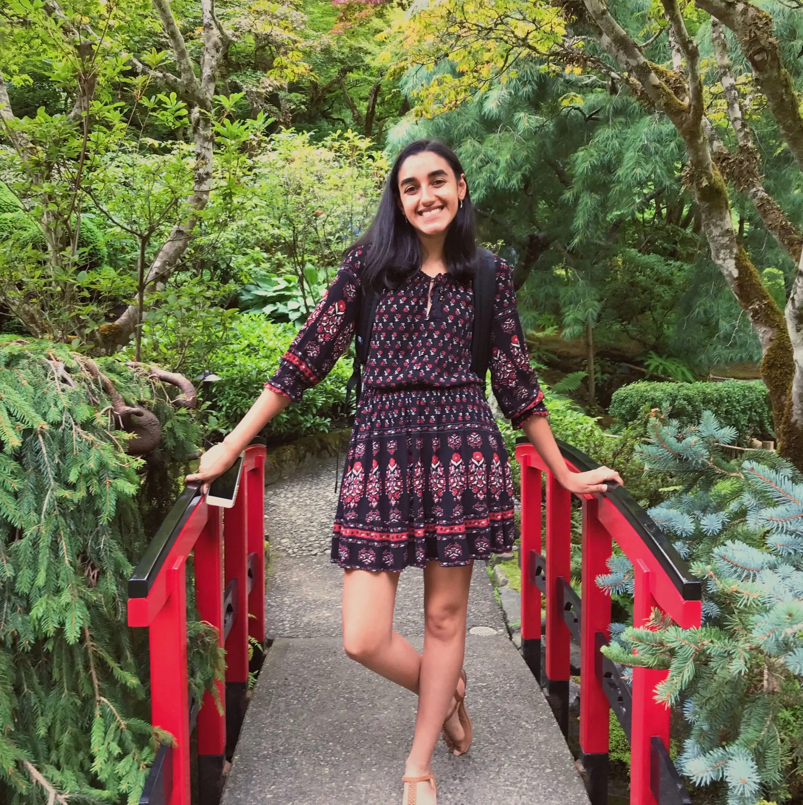
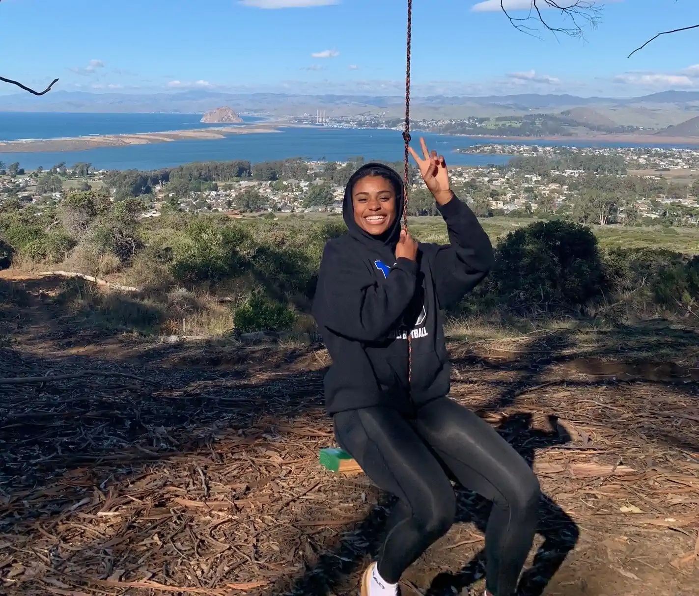
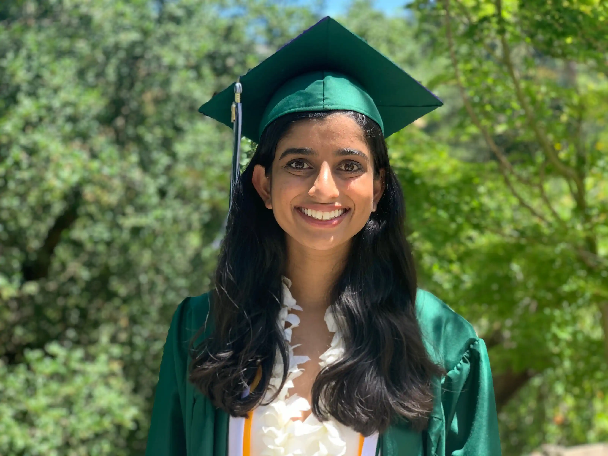
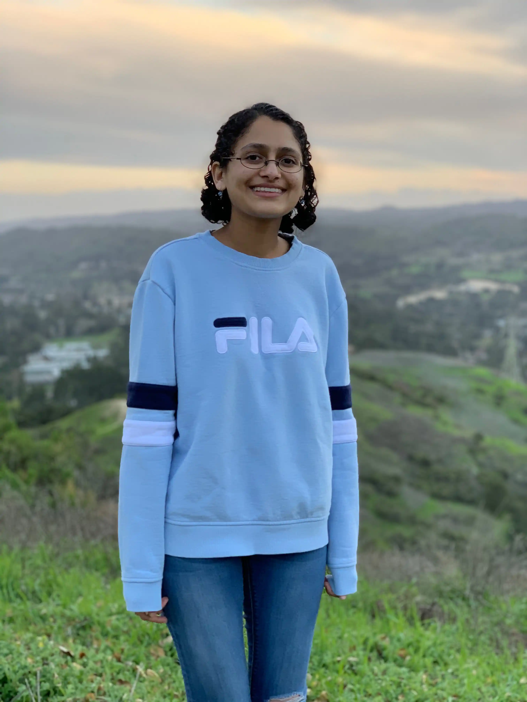
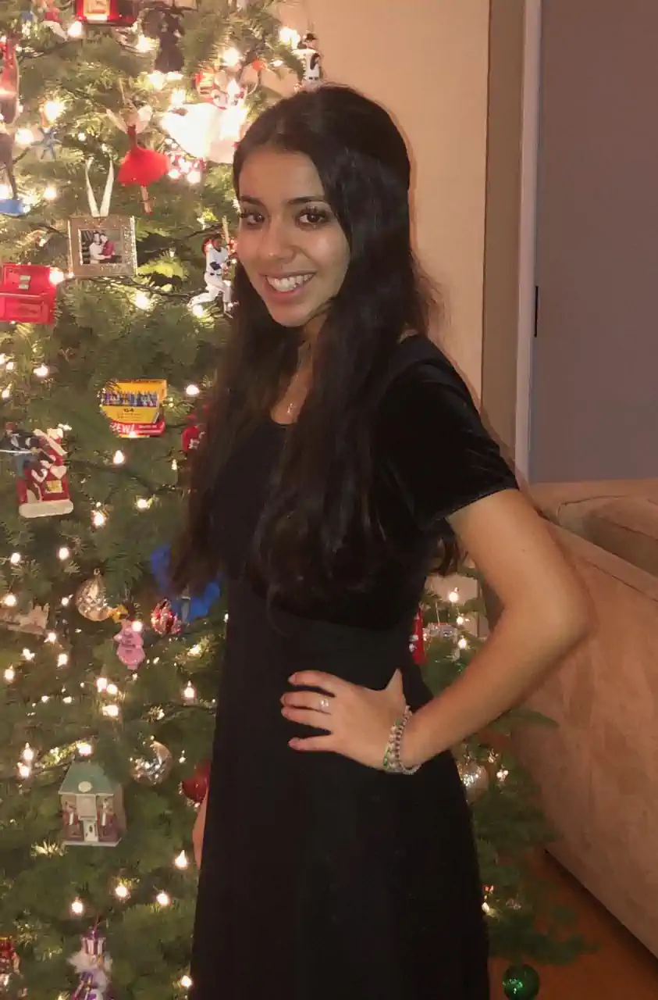

Ava Killbourn

Chairperson and Co-founder
I am a Medieval History & Archaeology major at the University of St. Andrews in Scotland. I have lived in the Lamorinda area for 14 years and graduated from Miramonte High School in 2019. I am committed to making the district an inclusive and diverse community that celebrates cultural, racial and socioeconomic differences and hope to see this reflected in the curricula in all four high schools.
ava.killbourn@reformauhsd.org
Carly Johnson

Chairperson and Co-founder
I am a student at American University in Washington, D.C. studying Communications, Legal Institutions, Economics, and Government (CLEG). My entire grade school education was in Orinda, culminating in my graduation from Miramonte in 2019. I hope to inspire change in our district by raising up voices of color and encouraging diverse and inclusive environments for students.
carly.johnson@reformauhsd.org
Ami Serrano

Chairperson
I am an incoming senior at Campolindo highschool and I’m a former member of the YMCA Youth and Government club. I come from two parents who are legal immigrants and have faced their hardships throughout their lives, and due to that I understand that racism is an outcome of deeply rooted ignorance. My goal is to teach this community what it is like to be a POC and to show them that despite what race people are, we are all human beings first. Our community is divided and my hope is that by educating and reforming the educational system, we will be able to stitch up the divide that has become so prevalent in our community.
ami.serrano@reformauhsd.org
Amrita Pannu

Chairperson
I'll be studying Anthropology at the University of California, Berkeley this fall! I use she/her/hers pronouns, and I was the former president and co-founder of Miramonte's South Asian Culture Club, and was a member of Miramonte's Equiteam, LatinX Student Union, BSU, and SAGA. Having grown up in this community ever since I was five, I've witnessed firsthand how much farther our community needs to go with its acceptance of POC, and I am wholly committed to standing up for everyone who feels as though their voice is being silenced here. Understanding begins in our schools by making sure every student hears their story in the narratives being taught.
amrita.pannu@reformauhsd.org
Ava Moran

Chairperson
I am the Co-president of BSU ( black student union) at Miramonte highschool, I am an EQUITEAM leader on campus, an incoming senior at Miramonte, and aspiring doctor or public policy politician that wants to uplift the underserved communities and become an advocate for minorities in this country.
ava.moran@reformauhsd.org
Keshini Cardozo

Chairperson
I was a debate co-captain my senior year at Miramonte and interned for Assemblymember Rebecca Bauer-Kahan. During my time at Miramonte up to my graduation this year, I recognized that change can start in our community, and I hope to promote equity in AUHSD schools.
keshini.cardozo@reformauhsd.org
Nisha Andrews

Chairperson
I will be studying Microbiology, Immunology, and Molecular Genetics at UCLA this fall. I was a president of the Public Speaking team during my senior year at Miramonte, and graduated in 2020. During my time at Miramonte, I witnessed the shortcomings in terms of diversity training and education at AUHSD schools. I hope we can make meaningful change in the district that will allow us to become a more accepting and inclusive community.
nisha.andrews@reformauhsd.org
Sofiía Gamboa

Chairperson
I am going to be a senior at Miramonte High School in the 2020-2021 school year. I am a co-president of our LatinX Student Union and an Equiteam leader on campus. Growing up in the Orinda and AUHSD school systems, it is clear that our campuses must become more inclusive, both through our education and diversity of our students. I hope for this work to improve the culture of our schools on campus and make it a better experience for students to come.
sofiia.gamboa@reformauhsd.org
Zevin Acuña
Chairperson
I am going to be a senior at Acalanes High School in this upcoming ‘20-’21 school year. I am an active member of the BSU on campus and am currently working on activism in and out of the Lamorinda community. I wanted to join this committee to help create change and a safe space for ALL students. Being who I am I have witnessed first hand how both racism and acceptance plays a role in our community. I want to do this work, not only for myself and my peers, but also my siblings and cousins who will follow my footsteps through the halls of Acalanes.
zevin.acuna@reformauhsd.org